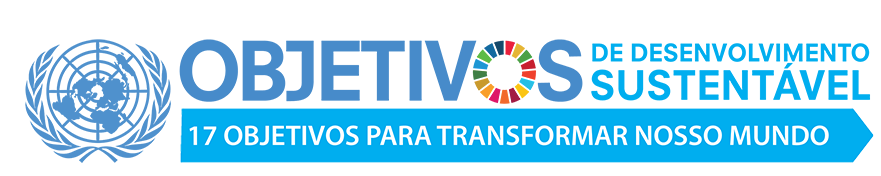

Sobre nós
Passatempo Educativo é uma organização não governamental, sem fins lucrativos, que desenvolve projetos na área educacional, cultural, preservação ambiental e desenvolvimento do turismo sustentável. Reconhecida pelo Ministério da Justiça como OSCIP – Organização Social Civil de Interesse Público sob nº 08071005566. Atuando há 22 anos na área da educação, nossos projetos têm como objetivos dar continuidade no processo ensino-aprendizagem através de situações práticas com atividades nas escolas, empresas, excursões, estudos do meio, visitas monitoradas, oficinas, workshops, palestras, jogos e gincanas dirigidos, projetos de incentivo à leitura e suporte didático para pais e professores além de elaboração de material pedagógico complementar. Reinventar os processos educativos e descobrir nosso importante papel na sociedade, através dos projetos Eletivas Novo Ensino Médio, Reforço Interativo, Livros em Ação, STEAM, Robótica nas Escolas entre outros, que tem impactado a educação de milhares de crianças. Conheça mais o Programa Eletivas Novo Ensino Medio clicando aqui.
Veja mais
Certificação ICFO
O ICFO (International Commitee on Fundraising Organizations) é o maior e mais renomado comitê
certificador de idoneidade de ONGs do mundo!
É como o Oscar para o terceiro setor e pouquíssimas ONGs conquistam tal certificação.
A Passatempo Educativo foi certificada pela Phomenta, que é a única representante do ICFO no
Brasil.Foram avaliados 5 pilares : Financeiro, Jurídico, Gestão e Governança, Potencial de Impacto e
Comunicação/Transparência, obtivemos a nota 95,30%.
Melhores ONGS 2022 e 2021
O Prêmio Melhores ONGs tem como missão reconhecer e divulgar as ONGs do Brasil que mais se destacam
anualmente pela sua excelência em gestão, governança, sustentabilidade financeira e transparência.
Estamos entre as 100 melhores ONGs do Brasil!
O Prêmio Melhores ONGs é realizado pelo Instituto O Mundo que Queremos, pelo Instituto Doar e pelo
Ambev VOA, com apoio de pesquisadores da Fundação Getúlio Vargas (FGV), do Instituto Humanize e da
Fundação Toyota do Brasil.


Reconhecimentos
Semifinalista do Prêmio Empreendedor Social Folha de SP 2021

Prêmio Itau Unicef 9ª Edição Semifinalista Nacional e Finalista Regional dentre 2922 projetos
Prêmio Albertina Brasil Ministério da Cultura - Finalista - Projeto Cultura Acessível
Prêmio Generosidade - Revista Época 2008 Finalista Nacional
10 melhores histórias de solidariedade
Programa AID 2014/2015 Embaixada da Austrália Projeto Livros em Ação entre os 10 escolhidos de 700 inscritos e em 2020/2021 - Projeto Reforço Interativo.